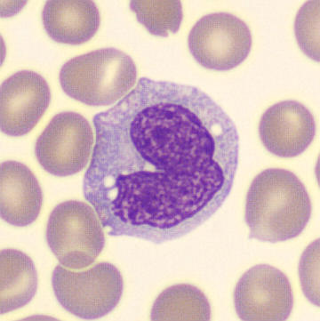

El Gigante de la Sangre. Guardián innato, arquitecto de la inmunidad, maestro de la fagocitosis. El único candidato que literalmente come a sus enemigos.
Cada número, cada medida, cada propiedad que lo hace imparable dentro del torrente sanguíneo.

Explora cómo luce el Monocito con cada técnica de tinción histológica.
El Monocito no es una célula estática. Puede reinventarse según la situación, algo que sus rivales simplemente no pueden hacer.
Macrófago pro-inflamatorio activado por IFN-γ + LPS. Ataque masivo con TNF-α, IL-1β, IL-6, IL-12, IL-23 y radicales libres de oxígeno (ROS). Destruye bacterias y células tumorales.
Macrófago anti-inflamatorio activado por IL-4, IL-13, IL-10 o glucocorticoides. Repara tejidos, produce TGF-β y VEGF. Apoya la cicatrización y la homeostasis.
Célula presentadora de antígenos profesional. Procesa patógenos y presenta péptidos vía MHC-I y MHC-II a linfocitos T, activando la inmunidad adaptativa.
Dentro del citoplasma del Monocito vive un arsenal de enzimas letales y moléculas reguladoras.
Los receptores del Monocito son su sistema de comunicación: detectan, señalizan y actúan con precisión quirúrgica.
El Monocito es el origen de una red multinivel que vigila cada rincón del organismo. Sus derivados tisulares son los guardianes permanentes de tus órganos.
días al año patrullando tu sangre y tejidos sin descansar ni un solo segundo.
tipos de células diferentes en que puede convertirse para defender distintos órganos.
% de tus órganos cuentan con un derivado del Monocito como guardián residente.
Si respondes bien, ¡demuestras que el Monocito merece tu voto!
Es hora de decir la verdad. Nuestros contrincantes tienen funciones... pero ninguna como la nuestra.
Solo transporta oxígeno y no tiene núcleo. Sin núcleo no hay inteligencia. ¿Un candidato sin núcleo que tome decisiones? Imposible. El Monocito no solo transporta, transforma, decide y protege.
Vive apenas 6–8 horas en tejidos y muere explotando (NETosis). ¿Un presidente con vida de mariposa efímera? El Monocito vive meses en tejidos y mejora con la experiencia.
Necesita días-semanas para activarse y responder. No puede fagocitar por sí solo. El Monocito actúa en minutos y además le enseña al linfocito qué atacar. ¿Quién manda a quién?
Solo tapa hoyos cuando ya hay daño. No tiene núcleo, no fagocita, no presenta antígenos. El Monocito previene el daño antes de que ocurra. Gestión proactiva, no reactiva.
votos registrados para Monocito